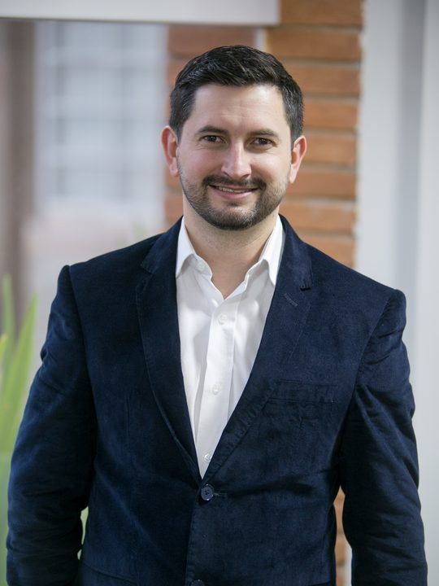

Osteopata em Londrina: tratar a causa da dor, não só o ponto que dói.
Atendimento individual com o Dr. Alan Borges — osteopata D.O e neurocientista. Avaliação do corpo como um todo para dores na coluna, enxaqueca, DTM, lesões e bebês.

A dor que volta sempre tem uma razão
Você já alongou, fortaleceu, tomou anti-inflamatório — e a dor voltou. Quando a abordagem padrão não resolve, normalmente o problema não está onde dói.
- A dor melhora com repouso, mas volta assim que você retoma a rotina.
- A dor desce para a perna, o braço ou a cabeça — passou do ponto de origem.
- Você já fez fisioterapia, pilates ou academia e a melhora não se sustentou.
- Exames de imagem não mostram nada relevante, mas a dor é real.
- Bebê que só dorme de um lado, cabeça achatada ou dificuldade para pegar o peito.
A osteopatia investiga mobilidade de articulações, fáscias, órgãos e sistema nervoso para entender por que aquela região está sobrecarregada. O tratamento é manual, sem medicamentos, e definido a partir do seu caso — não de um protocolo pronto.
O que é tratado
Cada página abaixo responde às perguntas mais comuns sobre o tratamento.
Dor lombar
Aquela dor que aparece ao levantar da cama ou no fim do dia — e sempre volta.
Dor cervical e de cabeça
Tensão no pescoço, dor de cabeça recorrente e limitação para virar a cabeça.
Bebês e crianças
Cólicas, refluxo, sono agitado, assimetrias e dificuldade na amamentação.
Enxaqueca e DTM
Dor de cabeça frequente e dor na articulação da mandíbula, com aperto nos dentes.
Postura e movimento
Avaliação postural e reeducação para dores que vêm do dia a dia sentado.
Método SIB
Saúde Integrativa Biológica: a abordagem criada pelo Dr. Alan, que une corpo e história de vida.
Como é a primeira consulta
A avaliação dura cerca de 50 minutos e é feita inteiramente com as mãos — sem aparelhos e sem pressa.
- Conversa e históriaQuando começou, o que piora, o que já foi tentado, como é o seu dia.
- Avaliação manualMobilidade de articulações, fáscias, órgãos e sistema nervoso — não só onde dói.
- Tratamento na mesma consultaTécnicas suaves e precisas, ajustadas ao que a avaliação encontrou.
- Plano e orientaçõesQuantas consultas, com que intervalo, e o que fazer em casa entre elas.
Não é manipulação de impacto. Em boa parte dos casos não há estalo nem força — o trabalho é de precisão, não de intensidade.
Perguntas frequentes
Preciso de pedido médico para marcar?
Não. A avaliação osteopática é feita pelo próprio osteopata. Se você já tem exames de imagem ou relatórios, traga — ajudam a entender o histórico.
Quantas consultas vou precisar?
Depende do caso. Problemas agudos costumam responder em 3 a 5 consultas; quadros crônicos, com anos de dor, pedem mais tempo. A estimativa é dada no fim da primeira avaliação, com honestidade.
A osteopatia dói?
Não. As técnicas são suaves e a intensidade é ajustada ao seu corpo durante a consulta. É comum haver alívio já na primeira consulta.
Atende crianças e bebês?
Sim. A osteopatia pediátrica é feita com toque muito leve, com o bebê calmo ou dormindo, e dura cerca de 40 minutos.
Onde fica o consultório?
Em Londrina, na Av. Madre Leônia Milito, 1500 — sala 409, no Atsushi Yoshii Tower, Gleba Palhano. Também há atendimento em São Paulo. Confirme o local pelo WhatsApp antes de agendar.
Atende convênio?
O atendimento é particular. Emitimos recibo para reembolso junto ao seu plano, quando houver essa cobertura.
Se a sua dor já pediu atenção mais de uma vez neste ano, vale uma avaliação.
O primeiro passo é uma conversa. Me conte o que está acontecendo e eu digo se a osteopatia é o caminho para o seu caso.